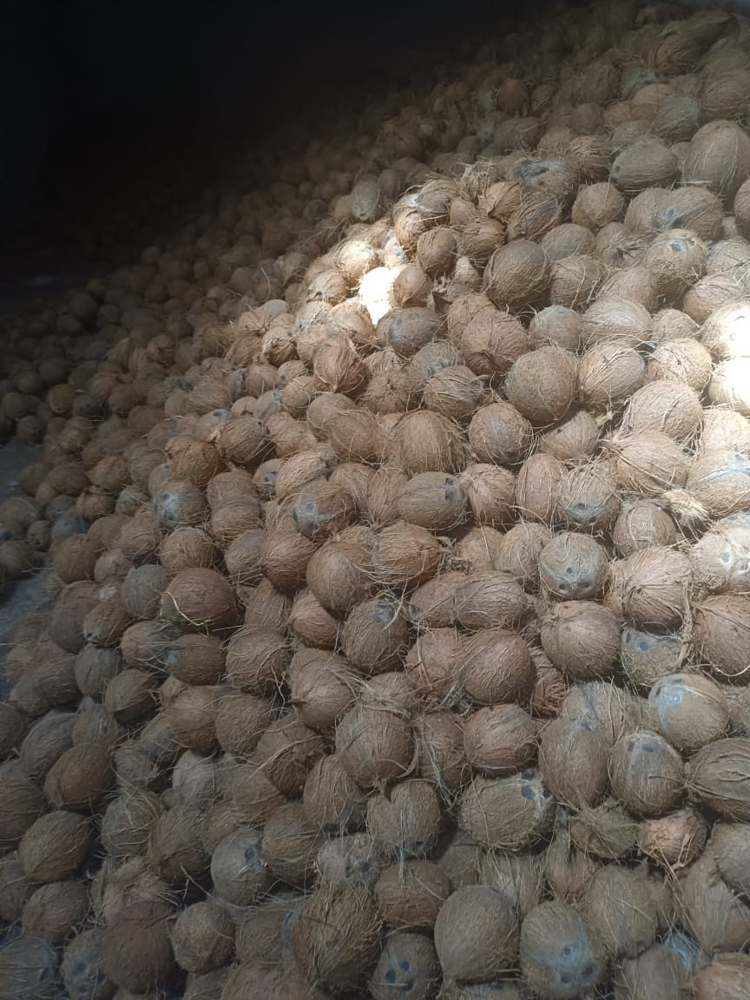
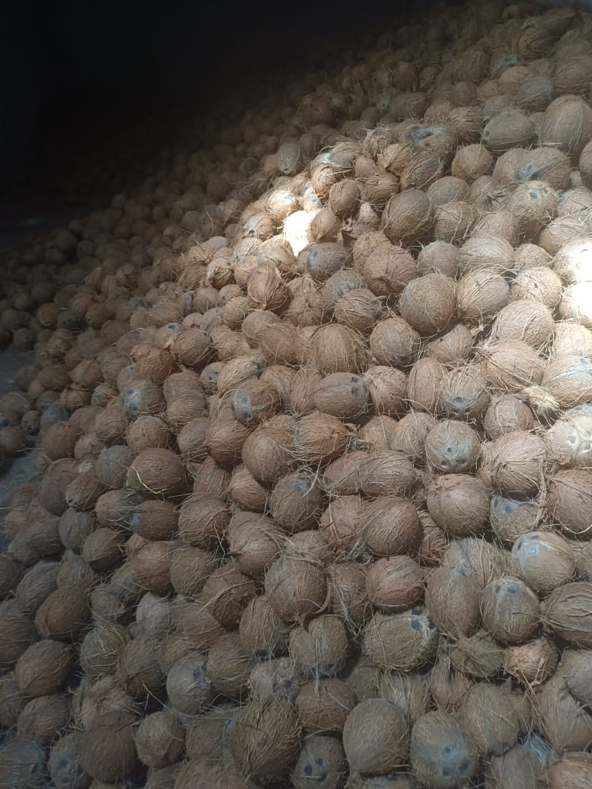
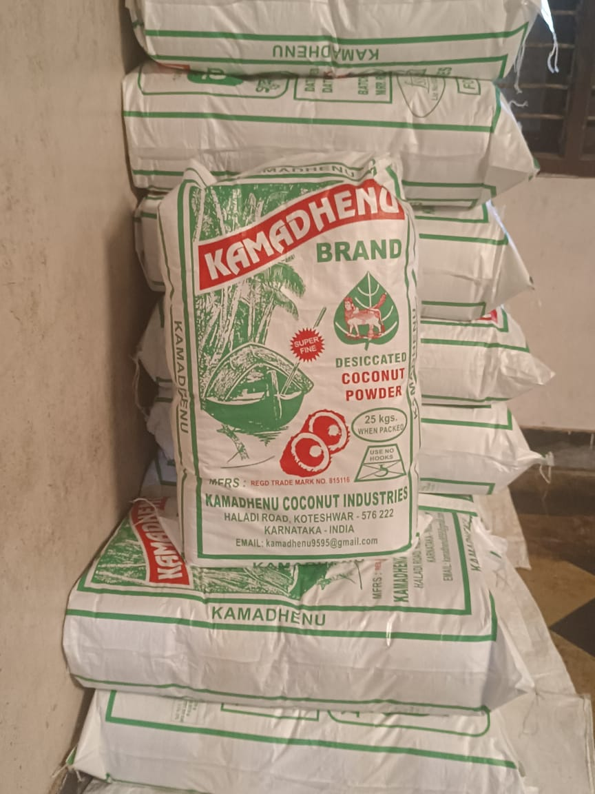
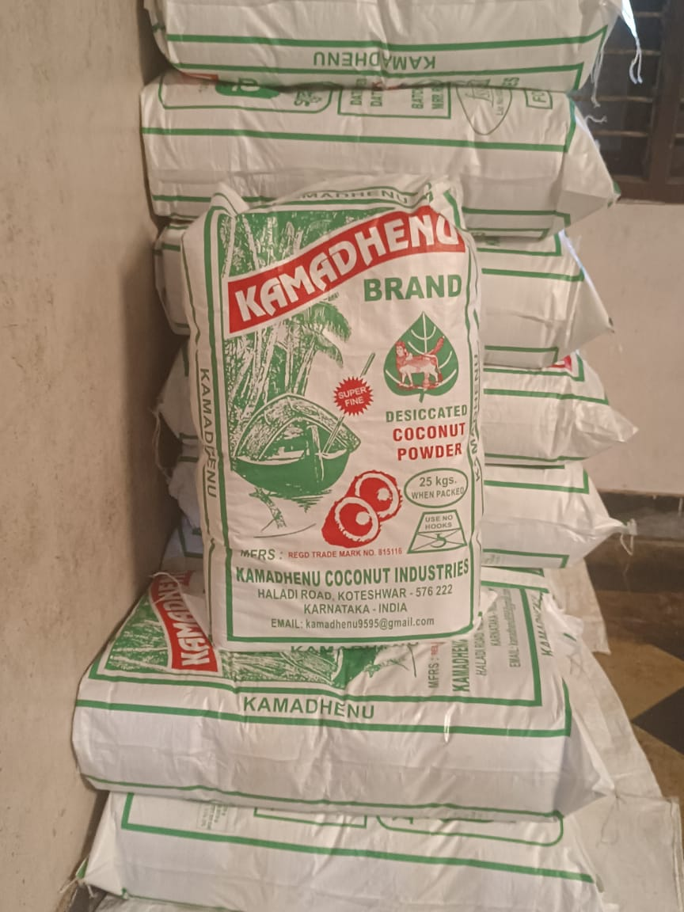

In India, almost every part of the coconut and the tree are used for various purposes. It is no surprise that the Sanskrit word of coconut means ‘kalpavriksha’, which means ‘the tree that provides life’. It dates back to 3000 years in ancient Vedic scriptures of Mahabharata. Even today, coconut is one of the most integral parts of the lives of Indians. The dry coconut is considered to be an essential element in many rituals and festivals amongst Hindus. They offered it to gods and for pooja. Any rituals are incomplete without coconut. Coconuts are smashed open while initiation or inauguration of any new work. Coconut shells are useful for many things once treated and can be used as bowls and utensils. The unused shells make good flammable material for an outdoor stove fire.
The coconut palm mostly grows on Saline soil near beaches and tropical habitats. Authorities claim that the coconut palm tree became popular from the Southeast Asian region, while another theory suggests its origin in the north-west of South America. Its spread has been attributed to two key factors. The natural disposal happened as coconuts floated from shore to shore. Coconuts are thick but light which can travel for several months on seawater.
The coconut crop is grown in 12.5 million hectares of land which constituted about 0.7% of net crop area of the world. The crop is grown in the coastal lowlands of continental SouthAsia and spread along the Indian and Pacific Ocean, the cultivation is mostly done by smalland marginal farmers. According to FAO statistics 2007, about 57.9 billion nuts wereproduced, which was equivalent to 7.3 metric tonnes of oil. The coconut oil ranks sixthamong the eight major vegetable oils of the world. India contributes about 15.46 % in areaand 21% in terms of production of coconut in the world. The coconut crop is grown ineighteen States and three Union Territories covering an area of 1.935 million hectares of land,with a production of 12,833 million nuts in the country. The major coconut crop acreage isconcentrated on the West Coast region of the country comprising the states of Kerala,Karnataka and Maharashtra, followed by East Coast of Tamil Nadu, Andhra Pradesh, Orissaand Pondicherry. The coconut cultivation areas also traditionally located in the coastal regionof Gujarat, Goa, West Bengal, Islands of Andaman & Nicobar and Lakshadweep. About 90%of the area of coconut cultivation and equally the same% of production of coconut are fromthe four Southern states, viz. Kerala, Karnataka, Tamil Nadu and Andhra Pradesh. Kerala isconsidered as the land of coconut and holds the key for the development of coconutproduction and marketing in the country.In the present scenario the trend in processing of coconut products is slowly setting in thecountry, but the domestic market is not ready to lift the coconut in product form. Moreover,the coconut processing industries have to compete with the international market players in theworld market. Consequent to the globalization of Indian economy, the domestic coconutmarket economy has also been pushed towards a situation of competition, where coconut oilhad to compete with the other low price vegetable oil and fats in the international market. Inspite of the changes in international and domestic market, the price of coconut oil has beensteadily increasing since 2002, and reached to record level of Rs.7224 per quintal at Kochimarket, the price of milling copra in Alleppy market was also recorded at the premium priceof Rs.4893 per quintals and the price of ball copra was at Rs.7500 per quintal in Tipturmarket in the month of December, 2004. This favourable market behaviour appeared to havebeen due to culmination of concerted efforts of the implementing agencies, developmentalpolicy of the Government to provide minimum support price to copra and coconut oil and thefuture trade.
 

 
